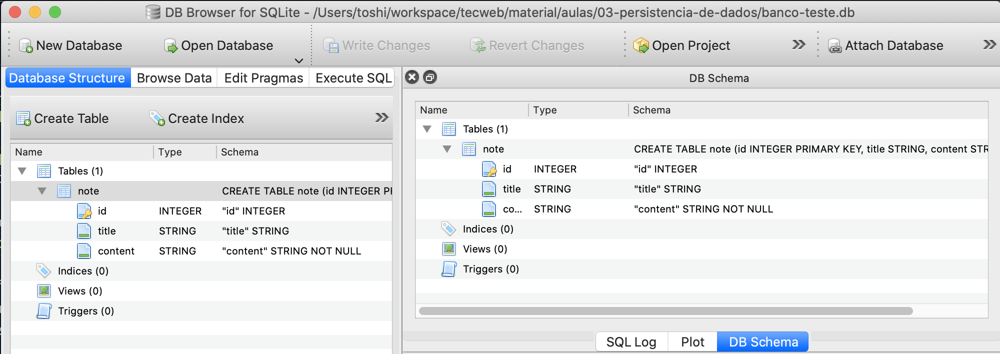

Parte 2: Criando a tabela¶
De modo geral, sistemas de bancos de dados são programas que ficam executando infinitamente. Um programa externo pode se conectar a esse programa para interagir com o banco de dados. Esse vai ser o nosso primeiro passo. Como queremos realizar múltiplas operações no banco de dados, vamos encapsular (lembra desse termo de Desenvolvimento Colaborativo Ágil?) a responsabilidade de se comunicar com o banco de dados em uma classe chamada Database. A função para se conectar ao banco de dados é:
conexao = sqlite3.connect(NOME_DO_ARQUIVO_DO_BANCO)
Para mais detalhes, acesse  https://docs.python.org/3/library/sqlite3.html?highlight=sqlite#tutorial
https://docs.python.org/3/library/sqlite3.html?highlight=sqlite#tutorial
Repositório Github
Para esta atividade, continue trabalhando no repositório Github utilizado no handout 01.
Exercício 01
Crie um arquivo chamado database.py. Nesse arquivo, crie uma classe chamada Database. O construtor da classe receberá o nome do banco de dados. Na construção, o objeto deve guardar a conexão com o banco (resultado da chamada da função sqlite3.connect mostrada acima) em um atributo chamado conn.
Atenção: Note que o arquivo do banco de dados deve possui a extensão .db (exemplo: NOME_DO_ARQUIVO_DO_BANCO + '.db').
Lembre-se de importar o pacote: import sqlite3.
Para testar o seu código, faça o download deste arquivo  e salve na mesma pasta do arquivo
e salve na mesma pasta do arquivo database.py. Basta executar python test_database.py no terminal para rodar todos os testes. Para este exercício o teste test_connect_on_init deve passar com sucesso. Se ao executar os teste você não se deparar com nenhuma mensagem com o texto FAIL: test_connect_on_init então isso significa que deu tudo certo. (As outras mensagens são referentes aos próximos exercícios.)
Se não se lembrar a sintaxe de classes em Python, procure no Google. Ou veja este exemplo  : https://docs.python.org/3/tutorial/classes.html#class-and-instance-variables
: https://docs.python.org/3/tutorial/classes.html#class-and-instance-variables
Se não conseguir entender, chame os professores.
Criando a tabela¶
Para o nosso projeto vamos precisar de apenas uma tabela. Essa tabela vai representar as anotações. Para criar uma tabela com SQL utilizamos o comando:
CREATE TABLE NOME_DA_TABELA COLUNAS_DA_TABELA;
Uma tabela só pode ser criada uma única vez. Você deveria encontrar um lugar para colocar o código de criação da tabela que só fosse executado uma única vez. Se você tentar criar a tabela mais de uma vez ocorrerá um erro.
Para não precisar se preocupar com isso você pode usar adicionar IF NOT EXISTS para a tabela ser criada apenas se ainda não existir. Assim, você pode executar o comando múltiplas vezes sem se preocupar. O comando ficaria então:
CREATE TABLE IF NOT EXISTS NOME_DA_TABELA (COLUNAS_DA_TABELA);
As colunas da tabela são separadas por vírgula e são indicadas como NOME_DA_COLUNA TIPO_DA_COLUNA RESTRICOES_ADICIONAIS. Alguns exemplos:
nome_da_rua TEXT NOT NULLdefine uma coluna chamadanome_da_rua, na qual podem ser inseridos apenas valores do tipo texto e ela não pode ser vazia;cpf TEXT NOT NULL UNIQUEdefine uma coluna chamadacpf, na qual podem ser inseridos apenas valores do tipo texto e os valores devem ser únicos, ou seja, não pode haver dois CPFs iguais;identificador INTEGER PRIMARY KEYdefine uma coluna chamadaidentificador, na qual podem ser inseridos apenas valores do tipo inteiro e ela será utilizada como chave primária (explicaremos abaixo o que isso significa).
Você poderia então, por exemplo, criar a tabela dados_pessoais com o comando (note os parênteses e o ponto e vírgula):
CREATE TABLE IF NOT EXISTS dados_pessoais ( nome_da_rua TEXT NOT NULL,
cpf TEXT NOT NULL UNIQUE,
identificador INTEGER PRIMARY KEY);
Chave primária
Uma das características de bancos de dados é a possibilidade de encontrar dados rapidamente. Para isso é comum o uso de identificadores únicos. Identificadores do tipo inteiro, além de facilitarem a busca, podem ser utilizados em diversas otimizações.
Enviando um comando SQL para o banco de dados¶
Ok, já sei qual é o comando para criar uma tabela, mas como eu o envio para o banco de dados? Agora é a hora de utilizarmos a conexão que criamos no exercício anterior. O objeto armazenado no atributo conn possui um método chamado execute, que recebe uma string contendo um comando SQL e envia para o banco de dados.
Exercício 02
Modifique o código do exercício anterior para que ele crie uma tabela no construtor da classe Database.
Altere o exemplo abaixo, para criar uma tabela que deve se chamar note e deve ter as colunas id (chave primária do tipo inteiro), title (do tipo string), content (do tipo string e não pode ser vazia).
CREATE TABLE IF NOT EXISTS dados_pessoais ( nome_da_rua TEXT NOT NULL,
cpf TEXT NOT NULL UNIQUE,
identificador INTEGER PRIMARY KEY);
Normalmente, utilizamos o comando acima no sistema de banco de dados. Porém, neste exercício queremos utilizar o Python para enviar o comando para o banco de dados.
Veja um exemplo de como fazer isso: https://docs.python.org/3/library/sqlite3.html?highlight=sqlite#tutorial
Como no exercício anterior, rode os testes no arquivo test_database.py para verificar se a sua implementação está correta. Se tudo der certo, o teste test_create_table_on_init deve passar sem errors.
Validando o resultado com o DB Browser for SQLite¶
Crie um arquivo chamado exemplo_de_uso.py na mesma pasta com o seguinte conteúdo:
from database import Database
db = Database('banco')
Após executar este programa, um arquivo chamado banco.db deve ter aparecido na sua pasta. Esse arquivo contém todo o seu banco de dados. Na maioria dos bancos de dados os arquivos não ficam tão acessíveis, mas como o SQLite é uma opção mais simples e direta, se quiser apagar o banco, basta apagar esse arquivo (e na verdade é o que fazemos no test_database.py).
Abra o arquivo banco.db no DB Browser for SQLite (clique no botão Open Database e selecione o arquivo). Você deve ver uma tela parecida com esta:

Veja que a tabela foi criada e as colunas estão listadas corretamente.
Agora que a tabela foi criada, podemos ir para a próxima parte.